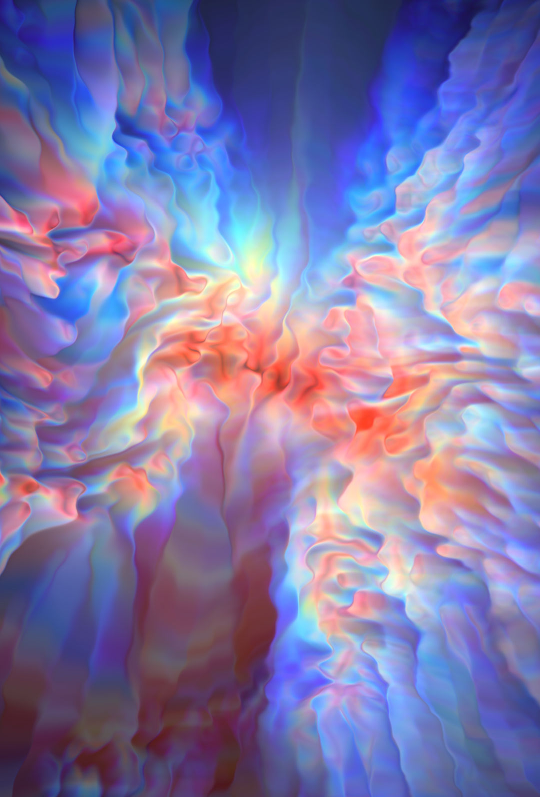
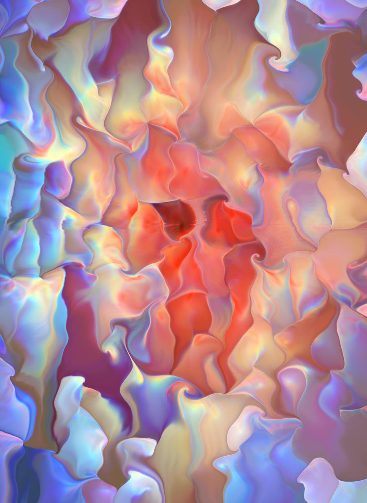

Fuck the AI which is abusing your reptilian brain to make you addicted to movies instead of art

The form of presentation matters a lot for the experience of those who visit our websites.
Media streaming platforms like Netflix, YouTube or Instagram, putting high quality pictures
and videos first before conveying the meanings, are shaping the sensitivity of generations
surfing the web, while shifting the focus towards the culture of appearance and boosting
our narcissistic tendencies. The AI recommendation algorithms of these platforms are designed
to keep our attention span focused on them for as long as possible. It is achieved by exploiting
the addiction mechanisms of our brains.
The way AI is presented in Science-Fiction refers to a form of a dialogue between the human and
the machine — an agent with high intelligence, supposedly higher than ours. But what is
happening at the moment with AI or rather
machine learning is far away from this vision. Machines are rather trained to live in symbiosis
with our paleolithic emotions (recommendation systems), flawed sensorium (autonomous cars),
xenophobia and vengeance (homicide/genocide prevention).
The project was born out of the need to fight back
these tendencies while hijacking the
aesthetics and experience of certain popular memeplexes. Letting everyone to easily wrap higher
ideas in visually appealing form. You can use it as a base of your website, online portfolio,
guided tour over your Vimeo videos. Maybe you want to build an online art gallery on top of it?
Radical Web Design
This project is using some radical web design concepts — golden ratio applied wherever
possible, webgl shader as a background
which will start rendering as soon as possible, lazy loading of resources whenever possible,
full screen animations during navigation,
fluid typography depending on the screen size, open composition not constrained by the screen
width, etc.
There is only one breaking point at 900px expanding images to the full screen width
in case of mobile screens and smaller tablets.

Descendant Projects
Above you can see the miniatures of projects which have been already built on top of this
template. I hope to see you projects among them.
This project is licensed under GPLv3, which means that it can be used to freely build open
source and personal projects. If you want to use it in commercial project, please contact
me. I want to be able to decide if the projects it will be used in are aligned with my values.
How to use this template?
Adjusting the project to own content requires minimal knowledge about HTML. I am always happy
to assist you and even build initial version of the website for you. Detailed instructions are
put in the comments of this HTML file and also on
GitHub repository of this project
.